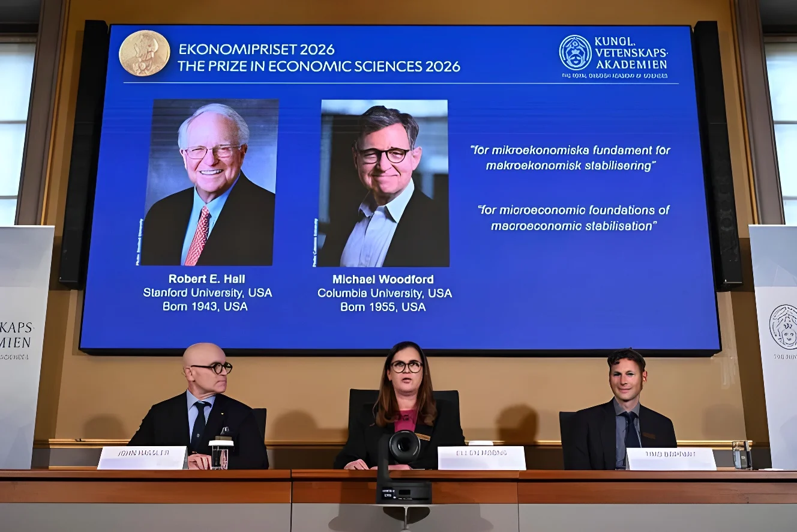

Le lundi 12 octobre 2026, l'Académie royale des sciences de Suède a attribué le prix d'économie en mémoire d'Alfred Nobel aux Américains Robert E. Hall, de l'université Stanford, et Michael Woodford, de l'université Columbia, « pour les fondements microéconomiques de la stabilisation macroéconomique ». En reconstruisant les modèles de l'économie à partir des décisions des ménages et des entreprises, ils ont fourni aux banques centrales et aux gouvernements les outils qui leur servent aujourd'hui à amortir les crises.
Robert E. Hall, né en 1943, est professeur à Stanford et chercheur à la Hoover Institution. Michael Woodford, né en 1955, enseigne à Columbia, où il occupe la chaire John Bates Clark d'économie politique. Tous deux ont soutenu leur thèse au MIT. Joint au téléphone à New York, Woodford a parlé d'un « immense honneur » et d'une « surprise ». Selon l'Académie, les deux lauréats « nous ont aidés à lisser les pics et les creux de l'économie ». Ils se partageront 12 millions de couronnes suédoises, environ 1,2 million de dollars, remis à Stockholm le 10 décembre, jour anniversaire de la mort d'Alfred Nobel.
Pendant les Trente Glorieuses, les gouvernements s'appuyaient sur des modèles keynésiens fondés sur des relations statistiques entre grands agrégats, comme l'inflation, la production ou la consommation. La courbe de Phillips promettait ainsi un arbitrage stable : un peu plus d'inflation contre un peu moins de chômage. Les chocs pétroliers des années 1970 ont brisé cette mécanique : avec la stagflation, l'inflation et le chômage ont grimpé en même temps, et les modèles ont cessé de prévoir quoi que ce soit d'utile. Aux États-Unis, la hausse des prix a dépassé 13 % en 1980.
En 1976, Robert Lucas avait montré pourquoi : ces relations statistiques changent dès que la politique change, parce que les agents adaptent leurs anticipations. Hall et Woodford ont tiré la leçon en bâtissant les modèles sur ce qui ne bouge pas, les choix des ménages et des entreprises, tout en gardant l'idée keynésienne que la politique économique peut amortir les chocs. Le comité Nobel avait déjà salué les étapes de ce tournant : Lucas en 1995, Finn Kydland et Edward Prescott en 2004, Thomas Sargent et Christopher Sims en 2011.
En 1978, Hall a appliqué les anticipations rationnelles à la théorie du revenu permanent de Milton Friedman. Si les ménages consomment en fonction de tout le revenu qu'ils attendent dans leur vie, leur consommation ne réagit qu'aux nouvelles imprévues : ses variations deviennent imprévisibles, comme une « marche aléatoire ». Conséquence directe pour la politique budgétaire, une baisse d'impôt temporaire pèse moins sur la consommation qu'un gain durable. En 1982, avec Frederic Mishkin, il a estimé qu'environ 80 % des ménages se comportaient ainsi, les autres vivant « au jour le jour », sans épargne ni accès au crédit. Élève de Robert Solow, Hall a longtemps présidé, à partir de 1978, le comité du NBER qui date officiellement les récessions américaines.
| Lauréat | Contribution |
|---|---|
| Robert E. Hall (Stanford, né en 1943) | Consommation, anticipations et revenu permanent (1978) |
| Michael Woodford (Columbia, né en 1955) | Modèle néokeynésien de la politique monétaire (2003) |
Prix d'économie à Robert E. Hall et Michael Woodford.
Prix à Joel Mokyr, Philippe Aghion et Peter Howitt, pour l'innovation et la croissance.
Woodford publie Interest and Prices.
Hall et Mishkin mesurent la part des ménages qui anticipent.
Article de Hall sur la consommation et le revenu permanent.
Premier prix d'économie, à Ragnar Frisch et Jan Tinbergen.
Woodford a construit, en partie avec Julio Rotemberg, l'un des modèles de référence de la macroéconomie néokeynésienne, rassemblé en 2003 dans Interest and Prices, dont le titre fait écho à un livre de Knut Wicksell de 1898. Les entreprises y fixent leurs prix en anticipant le chemin futur des taux d'intérêt, et non seulement le taux du jour. Pour le comité, la conséquence est claire : une banque centrale comme la Réserve fédérale agit autant par ce qu'elle annonce que par ce qu'elle décide, et doit expliquer son raisonnement et ses intentions. Les banques centrales ont depuis fait de leur communication un instrument à part entière, des cibles d'inflation aux indications sur l'évolution des taux, la « forward guidance ».
« Leurs travaux ont fourni une base théorique stable aux modèles désormais utilisés par les banques centrales et les gouvernements du monde entier. »
— John Hassler, président du comité du prix, 12 octobre 2026 (traduction)Les modèles issus de ces travaux sont devenus l'outil standard des banques centrales pour simuler l'effet d'une hausse de taux ou d'un plan de relance. Selon John Hassler, ils aident à affronter des chocs comme « les crises énergétiques ou des changements soudains de la consommation des ménages », et le comité les juge « extrêmement utiles pendant la pandémie et les crises énergétiques de ces dernières années ». Les travaux de Hall rappellent aussi les limites des politiques uniformes : les ménages pauvres, privés d'épargne, réagissent bien plus vite à un chèque de soutien que les autres.
Woodford a un parcours atypique : diplômé de l'université de Chicago, il a d'abord fait du droit à Yale avant sa thèse au MIT, soutenue en 1983, et a obtenu dès 1981 une bourse de la fondation MacArthur. Passé par Chicago et Princeton, il est revenu à Columbia en 2004. On lui doit aussi des travaux sur la théorie budgétaire du niveau des prix, et il avait reçu le prix Deutsche Bank en 2007 puis le prix BBVA Frontières de la connaissance en 2024. Hall, ancien président de l'American Economic Association (2010), est également connu hors du monde académique pour la « flat tax » imaginée avec Alvin Rabushka, un impôt à taux unique.
Le prix d'économie ne figure pas dans le testament d'Alfred Nobel de 1895 : il a été créé en 1968 par la banque centrale suédoise et décerné pour la première fois en 1969, mais il est remis avec les autres lors de la cérémonie du 10 décembre. Il clôt une saison 2026 qui a couronné Henri Kagan et Kenso Soai en chimie et la juriste sud-africaine Navi Pillay pour la paix. Sur 99 lauréats en économie, seules trois femmes ont été distinguées, la dernière étant Claudia Goldin en 2023. Avec Hall, cinq anciens doctorants de Robert Solow ont désormais reçu le prix, et les anciens du MIT l'ont remporté dix-sept fois.
Le prix 2026 récompense un tournant discret mais décisif : l'économie ne se pilote plus seulement avec des leviers, taux d'intérêt ou dépenses publiques, mais aussi avec des attentes. Hall a montré que les ménages consomment en fonction de l'avenir qu'ils imaginent, Woodford que les prix dépendent de la trajectoire que les banques centrales laissent entrevoir.
Ce choix tombe à un moment où la crédibilité des banques centrales est discutée, après la vague d'inflation de 2021 à 2023 que peu de modèles avaient anticipée. En couronnant les fondations plutôt que les prévisions, le comité rappelle que la stabilisation repose d'abord sur la confiance : une politique n'est efficace que si ceux qui la subissent croient à ce qu'on leur annonce.